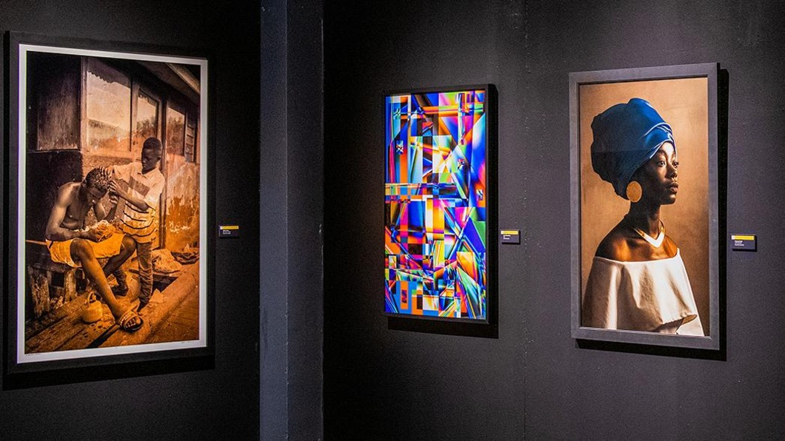
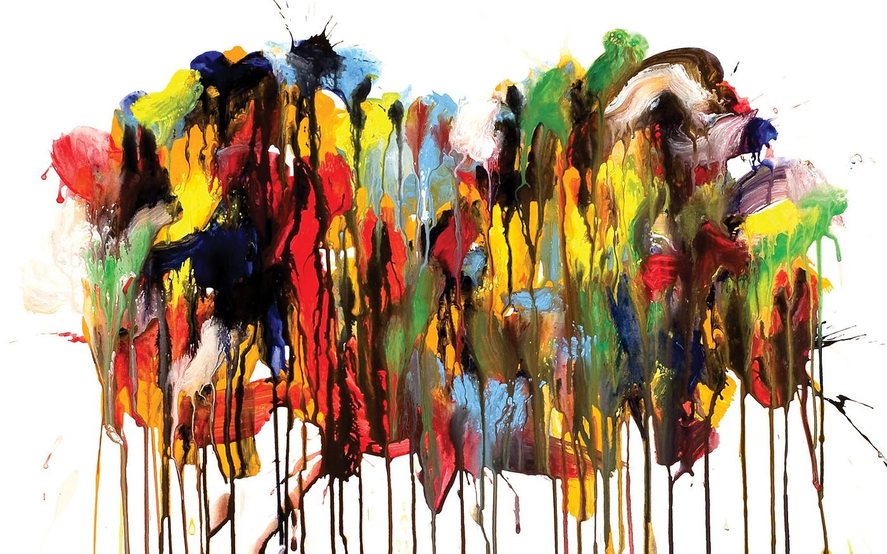
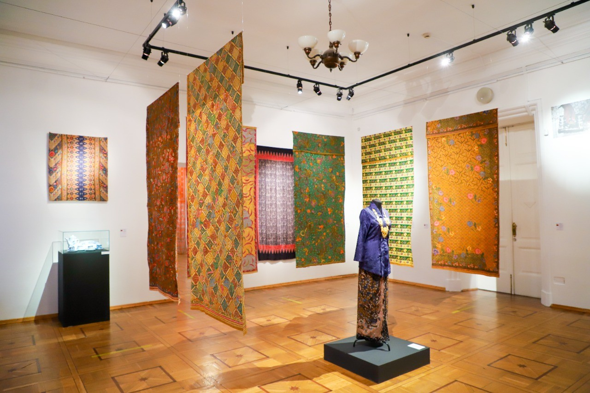

<!DOCTYPE html>
<html lang="en">
<head>
    <meta charset="UTF-8">
    <meta name="viewport" content="width=device-width, initial-scale=1.0">
    <title>Events</title>
    <link rel="stylesheet" href="event.css">
</head>
<body>
    
</body>
</html>

<body>
    <header>
        <nav>
            <div class="imgart"><a href="#"></a></div>
            <ul>
                <li>
                    <a href="Home.Html"><p>Home</p></a>
                    <a href="AboutUs.html"><p>About Us</p></a>
                    <a href="Gallery.html"><p>Gallery</p></a>
                    <a href="event.html"><p>Events</p></a>
                    <a href="Classes.html"><p>Classes</p></a>
                </li>
            </ul>
            <div class="imglog"><a href="Profile.html"></a></div>
        </nav>
    </header>

    <main>
        <div class="Upper">
            <h1>Events</h1>
            <div class="SnC">
                <div class="Search">
                    <input type="search" name="Search" placeholder="Search...">
                </div>
                <div class="Category">
                    <a href=""><p>Category</p></a>
                </div>
            </div>
        </div>

        <div class="Events">
            <div class="Img_event">
                <a href=""></a>
            </div>
                    <div class="Events_banner">
                    <div class="Events_Description">
                        <h2>African Art Exhibition</h2>
                        <p>10 January- 10February 2024, JIEXPO Kemayoran</p>
                        <div class="Events_DescriptionBold">
                            <p>See dynamic works from both professional and amateur African American artists from around the country. 
                            features paintings, drawings, fine art prints, sculpture, mixed-media,
                            ceramics and photography by African Americans, including youth artists between the ages of 14 and 17.</p>
                        </div>
                    </div>
                    <div class="Price_Banner">
                        <div class="Price">
                            <a href=""><p>5$</p></a>
                        </div>
                    </div>
                </div>
        </div>

        <div class="Events">
            <div class="Img_event">
                <a href=""></a>
            </div>
                    <div class="Events_banner">
                    <div class="Events_Description">
                        <h2>ContemporARTry 2024</h2>
                        <p>15 - 25 May 2024, Museum Macan</p>
                        <div class="Events_DescriptionBold">
                            <p>ContemporARTry  theme is "Tomorrow," which reflected pandemics, climate change, human rights,
                                 and gender issues. As one of Indonesia's most popular art exhibitions, this exhibition features local and international artists from Singapore,
                                 Thailand, Malaysia, Turkey, Vietnam, the Philippines, India, the Netherlands, Austria, Australia, and Czechoslovakia.</p>
                        </div>
                    </div>
                    <div class="Price_Banner">
                        <div class="Price">
                            <a href=""><p>5$</p></a>
                        </div>
                    </div>
                </div>
        </div>

        <div class="Events">
            <div class="Img_event">
                <a href=""></a>
            </div>
                    <div class="Events_banner">
                    <div class="Events_Description">
                        <h2>Festival Batik Nusantara</h2>
                        <p>21 - 28 April 2024, JCC Senayan</p>
                        <div class="Events_DescriptionBold">
                            <p>Festival Batik Nusantara is Indonesian regular events, 
                                that features numerous types of ‘Pembatik” from all over Indonesia.
                                In this exhibition, the sacred art of Indonesia revolutionize into new depth of fashion and art culture.</p>
                        </div>
                    </div>
                    <div class="Price_Banner">
                        <div class="Price">
                            <a href=""><p>Free</p></a>
                        </div>
                    </div>
                </div>
        </div>

    </main>
</body>